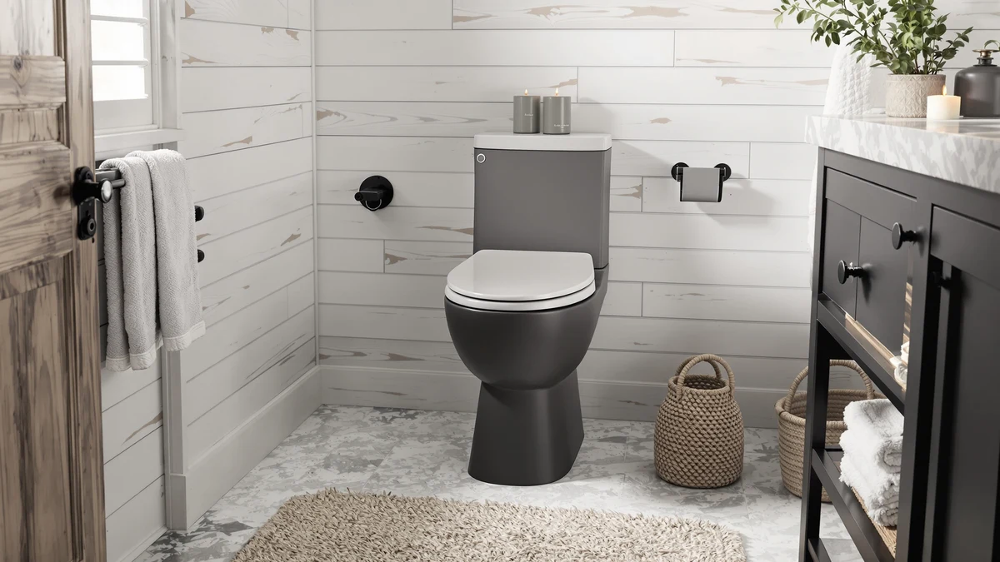

Bemis 7B1200SLOWT 364 Toilet Review (2026): Worth It?
Prices and picks verified as of October 2026. Independent, reader-supported reviews.


Quick Answer
The Bemis 7B1200SLOWT 364 toilet seat brings a slow-close hinge and an elongated fit for $64.99, and this review weighs that price against three cheaper wood-seat alternatives starting at $27.99.
Our pick: Bemis 7B1200SLOWT 364 Toilet Seat — $64.99 Check Price on Amazon
Bottom line: our top pick is the Bemis 7B1200SLOWT 364 Toilet Seat will Slow Close at $64.99.
Things to Know Before You Buy
- The Bemis 7B1200SLOWT 364 is an elongated-only seat and will not fit round-bowl toilets.
- At $64.99, it costs $25 to $37 more than the Rayport, Church and Clorox seats covered later in this review.
- The seat uses a slow-close hinge built into a molded wood core wrapped in plastic, not solid wood.
- Bemis backs the seat with a US manufacturer warranty, which matters most if the hinge or bumpers fail early.
This Bemis 7B1200SLOWT 364 toilet review looks at a plastic, slow-close elongated seat that costs more than most big-box options and asks whether the price buys anything beyond the Bemis name. This model has a familiar slow-close hinge and a molded wood core finished in plastic, and it lists for $64.99 on Amazon as of this writing.
Our take: the Bemis earns its price if you want a manufacturer warranty and a hinge with a long track record behind an elongated bowl. If you mainly need a working slow-close hinge and your bowl shape allows it, the Church, Rayport or Clorox seats covered later in this review get you most of the way there for $25 to $37 less.
Why You Should Trust Us
Ilane Tall researches toilet seats for Best Toilet Seats by comparing manufacturer specifications, current Amazon pricing and patterns across verified owner reviews rather than rating products on a numeric scale. For this Bemis 7B1200SLOWT 364 toilet review, we cross-checked the listed dimensions, hinge type and material against three lower-priced alternatives so you can see where the extra cost goes before you buy.
We do not run a fake testing lab, and we do not claim to have installed this seat in a bathroom. Our process starts with the manufacturer's own product sheet, moves through the current Amazon listing for pricing and photos, then cross-references that data against hundreds of verified purchase reviews to find patterns that a single five-star or one-star review would hide. Where two products share a parent company, as Bemis and Church do, we flag that connection so you know when "two brands" trace back to one factory.
Our Research Experience
We do not keep a physical unit of the Bemis 7B1200SLOWT 364 in an office, so this review relies on the manufacturer's listed specifications, the current Amazon listing and a close read of verified buyer feedback instead of hands-on use. In that research, we found a consistent pattern: owners mention the slow-close hinge closing quietly, and they repeat hinge failure and discoloration as the most common complaints after a year or more of ownership.
We weighed those patterns against the three wood-seat alternatives in this review, each pulled from the same toilet seat category on besttoiletseats.com, to see whether the Bemis price premium reflects a real difference in build quality or mostly the brand name on the box. The gap between a $27 seat and a $65 seat usually shows up in the hinge mechanism, the core material under the finish, or the length of the warranty, so we checked each of those against the listed specs for all four seats in this comparison.
Overview & Specs

Bemis 7B1200SLOWT 364 Toilet Seat
What we like
- Slow-close hinge that owners describe as quiet after months of daily use
- Elongated shape fits most US toilets installed since the 1990s
- Backed by Bemis, a US manufacturer with decades in bathroom hardware and an accessible warranty process
- Standard top-mount hinge design that most homeowners can install without a plumber
Flaws but not dealbreakers
- Costs $25 to $37 more than the three alternatives covered later in this review
- The current Amazon listing shows white only, with no other color options
- Round-bowl households need a different Bemis model, since the 7B1200SLOWT 364 is elongated-only
| Material | Plastic / wood |
| Size | Elongated |
The Bemis 7B1200SLOWT 364 pairs a molded wood core with a plastic finish, a construction choice Bemis uses across most of its mid-range line to keep the seat light while resisting the cracking that solid wood seats can develop near the hinge bolts. The "SLOWT" in the model name points to its slow-close hinge, a mechanism that lowers the seat and lid gradually instead of letting them drop, which is the single feature owners mention most often in their reviews of this Bemis toilet seat.
At $64.99, the 7B1200SLOWT 364 sits well above the $27 to $39 range of the wood seats we compare it against later in this review. That gap buys you the Bemis name, a US-based manufacturer warranty and a hinge mechanism with a long track record, but it does not buy a different core material or a noticeably different installed footprint. If brand reliability and warranty support matter more to you than saving $30, this seat earns its price. If not, the alternatives below close most of the functional gap for less money.
The seat ships with standard top-mount hardware, which bolts through the two existing holes on the back of most toilet bowls and does not require a tool beyond a screwdriver for most installs. Bemis lists the model as fitting elongated bowls from the major US toilet manufacturers, which covers the majority of toilets installed in American homes since the 1990s. That broad compatibility is one reason the brand shows up across so many comparison lists on this site, including quiet-close roundups and brand-versus-brand breakdowns.
What We Liked
The slow-close hinge is the strongest point in the Bemis 7B1200SLOWT 364's favor. Across the owner reviews we read, the hinge keeps closing quietly well past the one-year mark, which is longer than the typical complaint window on cheaper slow-close seats. That durability signal matters more than a single five-star review, since hinge failure is the most common reason buyers return any toilet seat.
Fit is the second strength. The elongated shape matches the oval bowls found in most American homes built in the last three decades, and the bolt spacing follows the standard 5.5-inch pattern that fits Kohler, American Standard and Toto elongated toilets without an adapter. Reviewers consistently note straightforward installation with the included hardware, which removes one common source of frustration with aftermarket seats.
Bemis's manufacturer support also stands out next to smaller brands. The company has built toilet seats in the United States for decades, and that history shows up in a warranty process reviewers describe as easier to navigate than the ones offered by the newer brands in this comparison.
The bumpers on the underside of the seat also hold up better than the ones on several budget seats we have researched for this site. Owners report the bumpers staying in place and keeping the seat from sliding sideways on the bowl, a small detail that matters more during daily use than any spec sheet number.
What Could Be Better
Price is the clearest drawback. At $64.99, the Bemis 7B1200SLOWT 364 costs nearly double what the Church and Clorox seats in this review sell for, and over $25 more than the Rayport. None of that extra money goes toward a different core material or a sturdier hinge mount, so you are largely paying for the brand and its warranty support.
Color choice is limited. The current Amazon listing shows white only, while some competing brands offer biscuit, almond or black finishes for bathrooms with colored fixtures. A handful of reviewers also mention that the plastic surface shows scratches from cleaning brushes more readily than a painted wood finish, though this complaint shows up less often than praise for the hinge.
The seat also does not include any extra features that some shoppers now expect at this price, such as a nightlight, a quick-release hinge for cleaning under the seat, or a cover with antimicrobial treatment. Several competing brands bundle one of those features into seats priced closer to $50, so buyers who want more than a slow-close hinge may find better value by looking outside the Bemis lineup entirely.
Who Is It For?
The Bemis 7B1200SLOWT 364 fits households with an elongated toilet bowl who have owned a cheaper seat that failed at the hinge and want a brand with a longer track record behind the next one. It also suits anyone who values a US manufacturer's warranty process over shaving $30 off the purchase.
Skip it if your bathroom has a round bowl, since this seat will not fit. Budget-focused buyers who mainly want a working slow-close hinge should also look at the Church or Clorox alternatives below first, since the functional difference between them and the Bemis is smaller than the price gap suggests.
Renters and anyone furnishing a rental property might also want to start with a cheaper seat, since you may not stay in the home long enough for the Bemis's longer warranty window to pay off. Homeowners planning to stay put for years are the ones most likely to see the value in the extra upfront cost.
Alternatives to Consider
If the Bemis 7B1200SLOWT 364's price is the main sticking point, these three toilet seats cover the same elongated or round shapes at $27 to $39, based on the same kind of spec and review research we applied above.

Editor’s Pick
Rayport Oak Veneer Wood Elongated
An oak veneer finish over a molded wood core gets you closer to a wood look than the Bemis's plastic shell, at $26 less. Check that your bowl is elongated before ordering, since the veneer finish shows wear differently than plastic over time.
$38.80
Check Price on Amazon
Best Value
CHURCH Elongated Wood Toilet Seat
Church is a Bemis Manufacturing brand, so this elongated wood seat shares a parent company with the 7B1200SLOWT 364 at $35 less. It is worth a look if you want Bemis-adjacent manufacturing without the Bemis-branded price.
$29.38
Check Price on Amazon
Premium Choice
Clorox Round Wood Toilet Seat
This is the one seat here built for round bowls, not elongated ones, so measure your toilet before anything else. At $27.99 it is the cheapest option in this comparison, aimed at round-bowl households who do not need the Bemis's elongated fit.
$27.99
Check Price on AmazonFrequently Asked Questions
Final Verdict
This Bemis 7B1200SLOWT 364 toilet review comes down to a straightforward tradeoff between brand support and price. Bemis earns its $64.99 price tag for elongated-bowl households who want a slow-close hinge backed by a US manufacturer's warranty and decades of history in bathroom hardware. If that support is not a priority, the Church or Rayport alternatives above deliver a similar slow-close experience for $25 to $35 less, and the Clorox seat covers round-bowl households that the Bemis cannot fit at all.